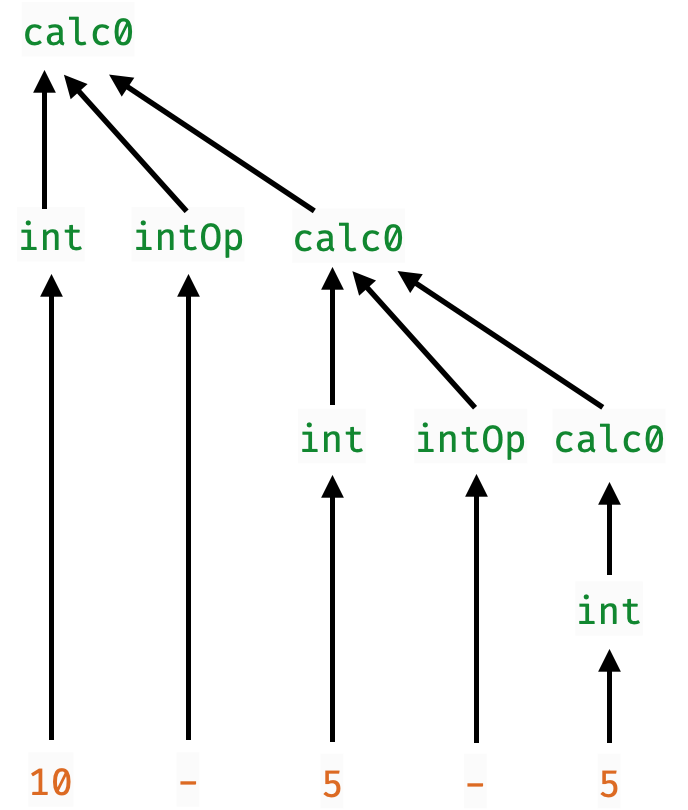

Parsers
A parser is a function that
- converts unstructured data (e.g.
String, array ofByte,…) - into structured data (e.g. JSON object, Markdown, Video…)
type Parser = String -> StructuredObject
Every large software system contains a Parser
| System | Parses |
|---|---|
| Compiler | Source code |
| Shell Scripts | Command-line options |
| Database | SQL queries |
| Web Browser | HTML, CSS, JS, … |
| Games | Level descriptors |
| Routers | Packets |
How to build Parsers?
Two standard methods
Regular Expressions
- Doesn’t really scale beyond simple things
- No nesting, recursion
Parser Generators
- Specify grammar via rules
Expr : Var { EVar $1 }
| Num { ENum $1 }
| Expr Op Expr { EBin $1 $2 $3 }
| '(' Expr ')' { $2 }
;- Tools like
yacc,bison,antlr,happy
- convert grammar into executable function
Grammars Don’t Compose!
If we have two kinds of structured objects Thingy and Whatsit.
Thingy : rule { action }
;
Whatsit : rule { action }
;To parse sequences of Thingy and Whatsit we must repeat ourselves:
Thingies : Thingy Thingies { ... }
EmptyThingy { ... }
;
Whatsits : Whatsit Whatsits { ... }
EmptyWhatsit { ... }
;No way to:
- Define a generic parser for sequences
- Reuse this generic parser for
ThingyandWhatsit
A New Hope: Parsers as Functions
Lets think of parsers directly as functions that
- Take as input a
String - Convert a part of the input into a
StructuredObject - Return the remainder unconsumed to be parsed later
data Parser a = P (String -> (a, String))A Parser a
- Converts a prefix of a
String - Into a structured object of type
aand - Returns the suffix
Stringunchanged
Parsers Can Produce Many Results
Sometimes we want to parse a String like
"2 - 3 - 4"into a list of possible results
[(Minus (Minus 2 3) 4), Minus 2 (Minus 3 4)]So we generalize the Parser type to
data Parser a = P (String -> [(a, String)])
EXERCISE
Given the definition
data Parser a = P (String -> [(a, String)])Implement a function
runParser :: Parser a -> String -> [(a, String)]
runParser p s = ???
QUIZ
Given the definition
data Parser a = P (String -> [(a, String)])Which of the following is a valid oneChar :: Parser Char
that returns the first Char from a string (if one exists)
-- A
oneChar = P (\s -> head s)
-- B
oneChar = P (\s -> case s of
[] -> [('', s)]
c:cs -> [c, cs])
-- C
oneChar = P (\s -> (head s, tail s))
-- D
oneChar = P (\s -> [(head s, tail s)])
-- E
oneChar = P (\s -> case s of
[] -> []
c:cs -> [(c, cs)])
Lets Run Our First Parser!
>>> runParser oneChar "hey!"
[('h', "ey")]
>>> runParser oneChar "yippee"
[('y', "ippee")]
>>> runParser oneChar ""
[]Failure to parse means result is an empty list!
EXERCISE
Your turn: Write a parser to grab first two chars
twoChar :: Parser (Char, Char)
twoChar = P (\cs -> ???) When you are done, we should get
>>> runParser twoChar "hey!"
[(('h', 'e'), "y!")]
>>> runParser twoChar ""
[]
>>> runParser twoChar "h"
[]
Composing Parsers
We can write twoChars from scratch like so:
twoChar :: Parser (Char, Char)
twoChar = P (\cs -> case cs of
c1:c2:cs' -> [((c1, c2), cs')]
_ -> [])But this is sad: would be much better to reuse oneChar!
twoChar :: Parser (Char, Char)
twoChar = pairP oneChar oneChar
QUIZ
twoChar :: Parser (Char, Char)
twoChar = pairP oneChar oneChar What must the type of pairP be?
A. Parser (Char, Char)
B. Parser Char -> Parser (Char, Char)
C. Parser a -> Parser a -> Parser (a, a)
D. Parser a -> Parser b -> Parser (a, b)
E. Parser a -> Parser (a, a)
A Pair Combinator
Lets implement pairP!
pairP :: Parser a -> Parser b -> Parser (a, b)
pairP aP bP = ???
High-level idea:
- Run
aPon the input string - For each result
(a, s')ofaP, runbPons' - For each result
(b, s'')ofbP, return((a, b), s'')
-- | We have just seen this "for-each" function in the previous lecture!
forEach :: [a] -> (a -> [b]) -> [b]
forEach xs f = concatMap f xs
pairP :: Parser a -> Parser b -> Parser (a, b)
pairP aP bP = P (\s -> forEach (runParser aP s) (\(a, s') ->
forEach (runParser bP s') (\(b, s'') ->
[((a, b), s'')])
))
This works, but is was a bit of a pain to write!
Does this code look familiar?
It’s like doing mutable state + non-determinism the hard way!
- i.e. without monads
Also, take a second look at the Parser type:
data Parser a = P (String -> [(a, String)])
data State s a = S (s -> (a, s))
Parser is a Monad!
Like State and [], Parser is a monad!
We need to implement two functions
returnP :: a -> Parser a
bindP :: Parser a -> (a -> Parser b) -> Parser b
QUIZ
Which of the following is a valid implementation of returnP
data Parser a = P (String -> [(a, String)])
returnP :: a -> Parser a
returnP a = P (\s -> []) -- A
returnP a = P (\s -> [(a, s)]) -- B
returnP a = P (\s -> (a, s)) -- C
returnP a = P (\s -> [(a, "")]) -- D
returnP a = P (\s -> [(s, a)]) -- EHINT: what did return do for State and []?
Bind for Parsers
Next, lets implement bindP
bindP :: Parser a -> (a -> Parser b) -> Parser b
bindP aP fbP = ???High-level idea:
- Run
aPon the input string - For each result
(a, s')ofaP, runbp = fbP aons' - For each result
(b, s'')ofbP, return(b, s'')
In other words, this is just a generalization of pairP!

bindP :: Parser a -> (a -> Parser b) -> Parser b
bindP aP fbP = P (\s ->
forEach (runParser aP s) (\(a, s') ->
forEach (runParser (fbP a) s') (\(b, s'') ->
[(b, s'')]
)
)
)
The Parser Monad
We can now make Parser an instance of Monad
instance Monad Parser where
(>>=) = bindP
return = returnP
And now, let the wild rumpus begin!
Parser Combinators
Lets write lots of high-level operators to combine parsers!
Here’s a cleaned up pairP
pairP :: Parser a -> Parser b -> Parser (a, b)
pairP aP bP = do
a <- aP
b <- bP
return (a, b)
Failures are the Pillars of Success!
Surprisingly useful, always fails
- i.e. returns
[]no successful parses
failP :: Parser a
failP = P (\_ -> [])
QUIZ
Consider the parser
satP :: (Char -> Bool) -> Parser Char
satP p = do
c <- oneChar
if p c then return c else failPWhat is the value of
quiz1 = runParser (satP (\c -> c == 'h')) "hello"
quiz2 = runParser (satP (\c -> c == 'h')) "yellow"quiz1 |
quiz2 |
|
|---|---|---|
| A | [] |
[] |
| B | [('h', "ello")] |
[('y', "ellow")] |
| C | [('h', "ello")] |
[] |
| D | [] |
[('y', "ellow")] |
Parsing Alphabets and Numerics
We can now use satP to write
-- parse ONLY the Char c
charP :: Char -> Parser Char
charP c = satP (\c' -> c == c')
-- parse ANY ALPHABET
alphaCharP :: Parser Char
alphaCharP = satP isAlpha
-- parse ANY NUMERIC DIGIT
digitCharP :: Parser Char
digitCharP = satP isDigit
QUIZ
We can parse a single Int digit
digitP :: Parser Int
digitP = do
c <- digitCharP -- parse the Char c
return (read [c]) -- convert Char to IntWhat is the result of
quiz1 = runParser digitP "92"
quiz2 = runParser digitP "cat"quiz1 |
quiz2 |
|
|---|---|---|
| A | [] |
[] |
| B | [('9', "2")] |
[('c', "at")] |
| C | [(9, "2")] |
[] |
| D | [] |
[('c', "at")] |
A Choice Combinator
Lets write a combinator p1 <|> p2 that
- returns the results of
p1
or, else if those are empty
- returns the results of
p2
E.g. <|> lets us build a parser that produces an alphabet OR a numeric character
alphaNumCharP :: Parser Char
alphaNumCharP = alphaCharP <|> digitCharPWhich should produce
>>> runParser alphaNumCharP "cat"
[('c', "at")]
>>> runParser alphaNumCharP "2cat"
[('2', "cat")]
QUIZ
(<|>) :: Parser a -> Parser a -> Parser a
p1 <|> p2 = ??? -- produce results of `p1` if non-empty
-- OR-ELSE results of `p2`Which of the following implements (<|>)?
do -- (A)
r1s <- p1
r2s <- p2
return (r1s ++ r2s)
do -- (B)
r1s <- p1
case r1s of
[] -> p2
_ -> return r1s
-- (C)
P (\s -> runParser p1 s ++ runParser p2 s)
-- (D)
P (\s ->
case runParser p1 s of
[] -> runParser p2 s
r1s -> r1s
)
A Simple Expression Parser
Let’s write a parser calc :: Parser Int that parses and evaluates simple arithmetic expressions
- an expression is
a + b,a - b,a * b,a / b - where
aandbare single-digit integers
>>> runParser calc "8/2"
[(4,"")]
>>> runParser calc "8+2cat"
[(10,"cat")]
>>> runParser calc "8-2cat"
[(6,"cat")]
>>> runParser calc "8*2cat"
[(16,"cat")]
-- 1. First, parse the operator
opP :: Parser (Int -> Int -> Int)
opP = plus <|> minus <|> times <|> divide
where
plus = do { _ <- charP '+'; return (+) }
minus = do { _ <- charP '-'; return (-) }
times = do { _ <- charP '*'; return (*) }
divide = do { _ <- charP '/'; return div }
-- 2. Now parse the expression!
calc :: Parser Int
calc = do x <- digitP
op <- opP
y <- digitP
return (x `op` y)
QUIZ
What will quiz evaluate to?
calc :: Parser Int
calc = do x <- digitP
op <- opP
y <- digitP
return (x `op` y)
quiz = runParser calc "10+2"A. [(12,"")]
B. []
C. [(10, "+2")]
D. [(1, "0+2")]
E. Run-time exception
Next: Recursive Parsing
Its cool to parse individual Char …
… but way more interesting to parse recursive structures!
"((2 + 10) * (7 - 4)) * (5 + 2)"
EXERCISE: Parsing Many Times
Often we want to repeat parsing some object
- E.g. to parse an
Intwe need to parse a digit many times
Implement a function manyP that:
- applies a parser
pas many times as it can - returns a list of the results
-- | `manyP p` repeatedly runs `p` to return a list of [a]
manyP :: Parser a -> Parser [a]
manyP = ???
>>> runParser (manyP digitCharP) "2022cat"
[("2022","cat")]
>>> runParser (manyP digitCharP) "cat"
[("","cat")]
-- | `manyP p` repeatedly runs `p` to return a list of [a]
manyP :: Parser a -> Parser [a]
manyP p = m1 <|> m0
where
m0 = return []
m1 = do { x <- p; xs <- manyP p; return (x:xs) }
Parsing Numbers
Now, we can write an Int parser as:
int :: Parser Int
int = do { xs <- manyP digitChar; return (read xs) }
… but is this correct?
QUIZ: Parsing Numbers
What will `quiz`` evaluate to?
int :: Parser Int
int = do { xs <- manyP digitChar; return (read xs) }
quiz = runParser int "cat"A. Type Error
B. [(0,"cat")]
C. []
D. Run-time exception
Parsing Numbers: Take 2
A number has one or more digits, not zero or more!
manyOneP :: Parser a -> Parser [a]
manyOneP p = do { x <- p; xs <- manyP p; return (x:xs) }
int :: Parser Int
int = do { xs <- manyOneP digitChar; return (read xs) }
>>> runParser int "2022cat"
[(2022,"cat")]
>>> runParser int "cat"
[] -- as expected!
Parsing Arithmetic Expressions
Now we can build a proper calculator!
calc :: Parser Int
calc = binExp <|> int
binExp :: Parser Int
binExp = do
x <- int
o <- opP
y <- calc
return (x `o` y) Works pretty well!
>>> runParser calc "11+22+33"
[(66,"")]
>>> runParser calc "11+22-33"
[(0,"")]
WARNING
The real (<|>) combinator in Parsec has different semantics:
It only runs p2 if p1 fails without consuming any input
- This makes parsers more efficient
- And helps with error reporting
To choose between objects that can have the same prefix, you need to use try:
-- In Parsec
calc :: Parser Int
calc = try binExp <|> int Otherwise, runParser calc "10" would fail
- because
binExpconsumes the10 - so
intis never tried
QUIZ
calc :: Parser Int
calc = binExp <|> int
binExp :: Parser Int
binExp = do
x <- int
o <- opP
y <- calc
return (x `o` y) What does quiz evaluate to?
quiz = runParser calc "10-5-5"A. [(0, "")]
B. []
C. [(10, "")]
D. [(10, "-5-5")]
E. [(5, "-5")]
Problem: Right-Associativity
binExp :: Parser Int
binExp = do
x <- int
o <- opP
y <- calc
return (x `o` y)"10-5-5" gets parsed as 10 - (5 - 5) because

The calc parser implicitly forces each operator to be right associative
doesn’t matter for
+,*but is incorrect for
-,div
QUIZ
binExp :: Parser Int
binExp = do
x <- int
o <- opP
y <- calc
return (x `o` y)What does quiz get evaluated to?
quiz = runParser calc "10*2+100"A. [(1020,"")]
B. [(120,"")]
C. [(120,""), (1020, "")]
D. [(1020,""), (120, "")]
E. []
The calc parser implicitly forces each operator to be right associative
… at the same precedence level!
Left Associativity
How can we make the parser left associative
- i.e. parse “10-5-5” as
(10 - 5) - 5?
Lets flip the order!
binExp :: Parser Int
binExp = do
x <- calc -- now calc is on the left
o <- intOp
y <- int
return (x `o` y)But …
>>> runParser calc "2+2"
...Infinite loop! calc --> binExp --> calc --> binExp --> ...
- without consuming any input :-(
Solution: Grammar Factoring
Any expression is a sum-of-products!
expr :== sum
sum :== (((prod "+" prod) "+" prod) "+" ... "+" prod)
prod :== (((atom "*" atom) "*" atom) "*" ... "*" atom)
atom :== "(" expr ")" | intOr in Haskell:
expr = foldLP prod (plus <|> minus)
prod = foldLP atom (times <|> div)
atom = parensP expr <|> intAll that is left is to implement parensP and foldLP!
EXERCISE: Parsing Parenthetic Expressions
Implement the function parensP:
-- | Parse what `p` parses, surrounded by parentheses:
parensP :: Parser a -> Parser a
parensP p = ???
>>> runParser (parensP int) "(10)"
[(10,"")]
>>> runParser (parensP int) "10"
[]
Fold Left Parser
Lets implement foldLP aP oP as a combinator
vPparses a singleavalueoPparses a binary operatora -> a -> afoldLP vP oPparses and returns the result((v1 o v2) o v3) o v4) o ... o vn)
But how?
grab the first
v1usingvPcontinue by
- either trying
oPthenv2… and recursively continue withv1 o v2 - or else (no more
o) just returnv1
- either trying
foldLP :: Parser a -> Parser (a -> a -> a) -> Parser a
foldLP vP oP = do {v1 <- vP; continue v1}
where
continue v1 = do { o <- oP; v2 <- vP; continue (v1 `o` v2) }
<|> return v1
Lets make sure it works!
>>> runParser expr "10-5-5"
[(0,"")]
>>> runParser expr "10*2+100"
[(120,"")]
>>> doParse sumE2 "100+10*2"
[(120,"")]
Parser combinators
That was a taste of Parser Combinators
- Transferred from Haskell to many other languages.
Many libraries including Parsec used in your homework - oneOrMore is called chainl
Read more about the theory - in these recent papers
Read more about the practice - in this recent post that I like JSON parsing from scratch